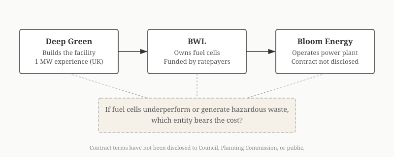

Lansing: The Company Behind Deep Green's Fuel Cells Has Been Fined, Sued, and Subsidized in Three States
Bloom Energy (NYSE: BE) will supply and operate 16 megawatts of solid oxide fuel cells at the proposed Deep Green Technologies data center in downtown Lansing. In Delaware, Bloom received more than $580 million in public subsidies, promised 1,500 jobs and delivered under 800, was fined $1.37 million by the EPA for mishandling hazardous waste, and had 18 MW of fuel cells decommissioned after seven years against an expected lifespan of 15 to 21. Ninety-one percent of Bloom's fuel cells run on natural gas. After two years of degradation, they emit 825 or more pounds of CO₂ per megawatt-hour, within striking distance of a conventional gas plant's 896.
LANSING, Mich. — Deep Green Technologies proposes a 24-megawatt data center on city-owned land in downtown Lansing. The company was not named publicly until January 16, 2026, two months after the project was announced. Its role as operator, not just equipment supplier, became publicly known in approximately March 2026.
Bloom's largest and most documented installation is in Newark, Delaware.
Delaware: The Record
Between 2012 and the present, Bloom Energy received more than $580 million in combined subsidies from the State of Delaware, according to A Better Delaware, a nonpartisan policy organization. The subsidies included $405 million or more in ratepayer surcharges extended through 2033 and $30 million or more in direct state grants. The University of Delaware provided a 240,000-square-foot manufacturing facility at $1 per year rent for 25 years.
| Promise | Result |
|---|---|
| 1,500 jobs by September 2016 | Under 800 as of 2025 |
| Six campus buildings | Zero built |
| 15-21 year fuel cell lifespan | 18 MW decommissioned after ~7 years |
State Senator David Lawson, who voted for the original subsidy package: "I think we were sold a bill of goods." (Heritage Foundation event transcript). In 2017, Bloom returned a portion of incentive money after failing to meet job targets. (Delaware Public Media, Oct 25, 2017)
Sources: A Better Delaware; Heritage Foundation; Delaware Public Media.
Delaware and Lansing, Side by Side
In Delaware, Bloom was the principal: it received the subsidies, made the job promises, and operated the facilities. In Lansing, Bloom is a subcontractor. Deep Green Technologies is the developer, and BWL is the infrastructure owner. But the fuel cell technology, the emissions profile, and the company operating the equipment are the same.
| Bloom in Delaware | Bloom in Lansing | |
|---|---|---|
| Bloom's role | Developer, manufacturer, operator | Equipment supplier and operator |
| Public subsidy | $580M+ to Bloom directly | 20-year BWL contract (terms under NDA); Deep Green gets city-owned parking lot |
| Jobs promised | Bloom promised 1,500; delivered under 800 | Deep Green promises 25-50 permanent + construction |
| "Clean energy" claim | Delaware classified natural gas fuel cells as "renewable" after Bloom lobbying | BWL GM Peffley: fuel cells are "considered clean energy in two states" |
| Fuel cell ownership | Bloom-owned | BWL-owned (ratepayer-funded) |
| Track record | 18 MW decommissioned after ~7 years; $1.37M EPA fine | No Bloom installation of this type (data center + CHP + district heating) exists |
The "two states" referenced by Lansing Board of Water and Light General Manager Dick Peffley at the November 6, 2025 BWL Committee of the Whole are almost certainly Delaware and California. Both have since moved away from Bloom subsidies. (BWL Board packet, Nov 18, 2025, p. 39)
Hazardous Waste
Bloom Energy self-identified to the EPA as a "Large Quantity Generator" of hazardous waste. The waste codes listed in Hindenburg Research's September 2019 report include D018 (Benzene), D007 (Chromium), D008 (Lead), and D001 (Ignitable waste). In late 2020, the EPA assessed a $1.37 million fine against Bloom for mishandling hazardous materials from its Delaware facility. (A Better Delaware)
In 2016, waste contractor Unicat filed a lawsuit alleging that Bloom canisters contained "extremely hazardous" and "toxic" material and that Bloom had dumped benzene-containing waste in California. (California DTSC records) Bloom ships hazardous waste from its Newark, Delaware facility to Indiana for disposal. (Hindenburg Research)
The Deep Green data center would sit on a 2.7-acre downtown parking lot. No public discussion of Bloom's hazardous waste generation has appeared in any Lansing Council hearing record, Planning Commission packet, or BWL Board meeting packet reviewed for this analysis.
Emissions
Ninety-one percent of Bloom fuel cells run on natural gas, not hydrogen, not biogas. (NBC Bay Area) A University of Delaware study found Bloom overstated fuel cell efficiency by up to 20 percent. After two years of operation, fuel cells emit 825 or more pounds of CO₂ per megawatt-hour, compared to 896 for a combined-cycle natural gas plant. (Hindenburg Research, citing the UDel study)
Deep Green's own Council presentation acknowledges the gap, stating that fuel cells achieve "CO₂ reduced by nearly 50%." This is a reduction compared to conventional generation, not an elimination. At 16 MW running continuously, the facility would produce an estimated 49,000 to 56,000 tons of CO₂ per year. (Deep Green Council presentation, p. 13, CivicClerk)
The Michigan Conservative Energy Forum, which submitted a letter supporting Deep Green on February 9, 2026, acknowledged the same issue: "The fuel cell technology itself is emission-free, but the production of hydrogen derived from natural gas is not." (MICEF letter, signed by Executive Director Ed Rivet II)
Three States, Three Reversals
| State | What happened | Source |
|---|---|---|
| Delaware | Classified natural gas fuel cells as "renewable energy" after Bloom lobbying. $580M+ in subsidies followed. | A Better Delaware |
| New Jersey | Pulled fuel cell subsidies entirely. | Institute for Energy Research |
| California | Ended fuel cell manufacturer subsidy program. Santa Clara restricted new Bloom natural gas installations. | NBC Bay Area |
Fuel Cell Lifespan
Bloom has stated fuel cell lifespan exceeds five years. Hindenburg Research documented post-2017 cells lasting under three. In Delaware, 18 MW of fuel cells were decommissioned after approximately seven years of operation, against an expected lifespan of 15 to 21 years. (Hindenburg Research, September 2019)
At an estimated capital cost of $7,000 to $8,000 per kilowatt, 16 MW of fuel cells cost $112 million to $128 million, which is notable because Deep Green's total announced project cost is $120 million. Under the proposed contract structure, BWL would own the fuel cells. If cells require replacement every three to seven years rather than every 15 to 21, the replacement cost over a 20-year contract period would be borne by the fuel cell owner: BWL, funded by Lansing ratepayers.
In February 2020, Bloom restated 18 months of financials surrounding its July 2018 IPO, acknowledging "material misstatements" related to service contract accounting. The IPO class action settled for $3 million. (Yahoo Finance; Bloomberg Law)
Deep Green Cannot Operate Its Own Power Plant
Deep Green Technologies operates one facility: a 1 MW data center in Swindon, UK. The Lansing project is 24 MW, a 24-fold scale-up in a different country with a different regulatory environment, and the company has no experience operating solid oxide fuel cells.
Bloom's typical customers are Equinix (100+ MW across 20 sites), AEP ($2.65 billion, 1 GW), Brookfield ($5 billion AI data center partnership), Oracle, Intel, and Apple. (Data Center Knowledge) No named case study has been found of Bloom deploying a combined data center, fuel cell, and municipal district heating system. Bloom launched its combined heat and power product in 2023. (Bloom CHP page; Bloom CHP launch press release)
The proposed liability structure splits responsibility three ways: Deep Green builds the facility, BWL owns the fuel cells and infrastructure, and Bloom operates the power plant. If fuel cells underperform, generate hazardous waste, or degrade faster than projected, which entity bears the cost has not been publicly addressed. The contracts have not been disclosed.

The Bloom Service Contract
The Bloom service contract would define performance guarantees, hazardous waste handling responsibilities, replacement triggers, and cost allocation between Bloom, Deep Green, and BWL.
As of this writing, the Bloom service contract has not been disclosed to the Lansing City Council, the Lansing Planning Commission, or the public. BWL General Manager Dick Peffley declined to identify the fuel cell company at the November 6, 2025 BWL Committee of the Whole, citing a non-disclosure agreement. (BWL Board packet, Nov 18, 2025, p. 39)
Other Bloom Projects
| Project | Outcome | Source |
|---|---|---|
| Santa Clara VTA (2013) | GM recommended rejecting Bloom deal. PPA "not feasible" after financing backed out. Cost: $14,500/kW vs. $1,017/kW conventional. | Hindenburg Research |
| Home Depot, Greenbush, NY | System failed ("blew") within one year of installation. | Hindenburg Research |
| Home Depot, Clifton Park, NY | Server "came right off the building" shortly after installation. | Hindenburg Research |
| Delaware 18 MW | Decommissioned after ~7 years (expected 15-21). | Hindenburg Research |
Disclosure Timeline
| Date | What was disclosed | What was not |
|---|---|---|
| November 5, 2025 | 24MW data center; BWL provides all power | Fuel cells, Bloom identity, operator arrangement |
| November 6, 2025 | Peffley confirms fuel cells exist; declines to name company (NDA) | Bloom identity, operator role |
| January 16, 2026 | Bloom Energy identified as fuel cell supplier | Operator role |
| ~March 2026 | Bloom hired to operate the facility |
Sources: BWL press release, Nov 5, 2025; BWL Board packet, Nov 18, 2025, p. 39 (lbwl.com/about-bwl/governance); WKAR, Jan 16, 2026; March 9, 2026 Council meeting transcript.
The land sale hearing is scheduled for March 23. The conditional rezoning hearing is scheduled for April 6, 2026.
Methodology
This analysis is based on publicly available records: Hindenburg Research's September 2019 report on Bloom Energy, A Better Delaware's January 2025 assessment, Heritage Foundation event transcripts, NBC Bay Area investigative reporting, Institute for Energy Research analysis, California DTSC records, Bloom Energy SEC 10-K filings, BWL Board of Commissioners meeting packets from lbwl.com/about-bwl/governance (September 2025 through March 2026), Council hearing packets from CivicClerk, news reporting from WKAR, Delaware Public Media, and Data Center Knowledge. Bloom's stock price and financial data are from Nasdaq and SEC filings. Hindenburg Research is a short seller with a financial position in Bloom Energy; its factual claims regarding Delaware subsidies, fuel cell lifespan, and hazardous waste codes have been independently corroborated by state records, EPA enforcement actions, and University of Delaware research cited in this article.